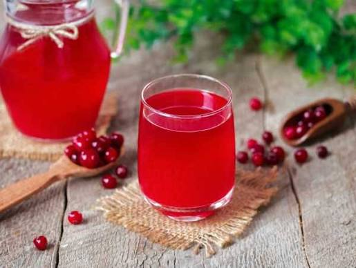
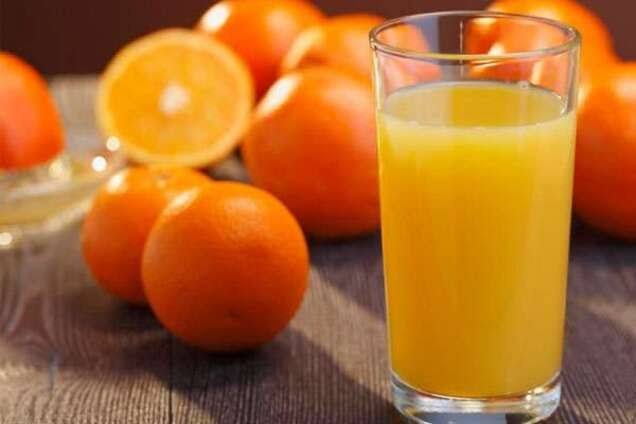
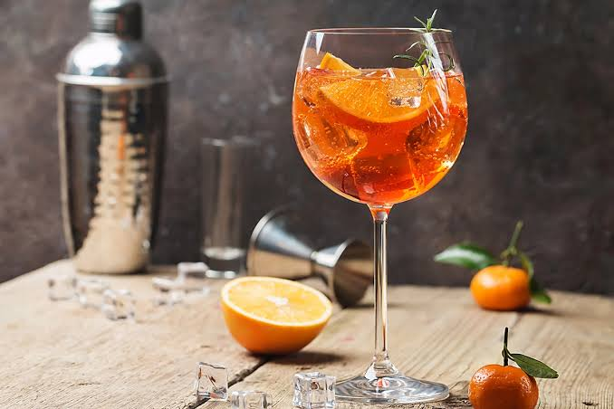
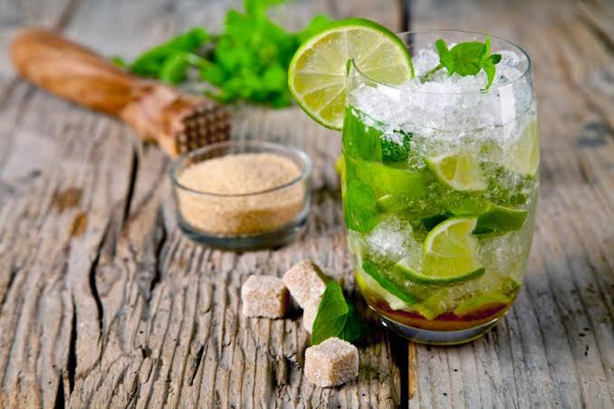
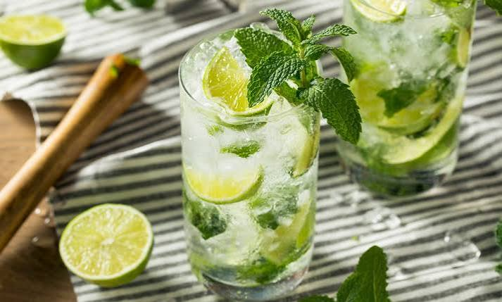

Кава
Час приготування: 5 хв
Класична ароматна кава середнього обсмаження для бадьорого початку дня.
ДетальнішеЧас приготування: 5 хв
Класична ароматна кава середнього обсмаження для бадьорого початку дня.
Детальніше
Час приготування: 3 хв
Традиційний зігріваючий напій із добірного чайного листя.
Детальніше
Час приготування: 15 хв
Освіжаючий напій із натуральних лісових ягід з легкою кислинкою.
Детальніше
Час приготування: 5 хв
100% натуральний сік прямого віджиму, багатий на вітамін C.
Детальніше
Час приготування: 5 хв
Популярний італійський аперитив із легкою цитрусовою гірчинкою.
Детальніше
Час приготування: 7 хв
Освіжаючий напій із ідеальним балансом солодкуватості, цитрусу та свіжої м'яти.
Детальніше
Час приготування: 7 хв
Охолоджуючий мікс соку свіжого лайма, тростинного цукру, м'яти та содової.
Детальніше
Час приготування: 5 хв
Ніжний тропічний напій з вираженим кокосово-ананасовим кремовим смаком.
Детальніше